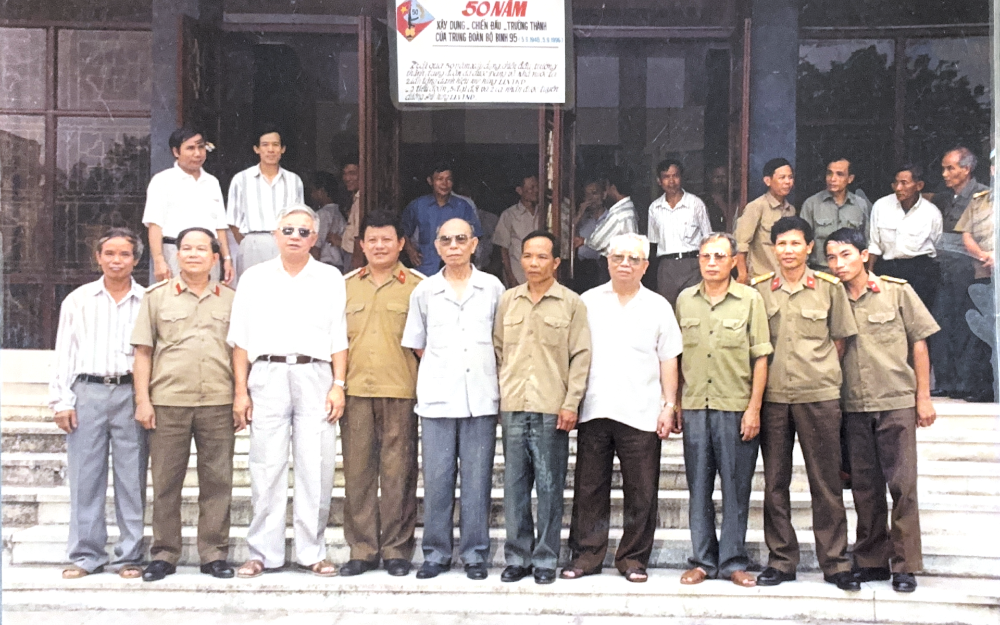

Tiêu đề ảnh
Mô tả chi tiết về bức ảnh này.
“Trước hết phải nói tới cái nhìn đúng đắn, xa rộng của Đảng ta khi đánh giá địa bàn chiến lược Tây Nguyên... tạo ra thế chiến lược để bắt đầu cuộc Tổng tiến công mùa Xuân 1975.”
Trích hồi ký "Ký ức Tây Nguyên"Thượng tướng Đặng Vũ Hiệp (1928–2008) là một nhà hoạt động quân sự xuất sắc, người chiến sĩ cách mạng kiên trung đi qua hai cuộc kháng chiến vĩ đại của dân tộc. Hơn mười năm ròng rã gắn bó với chiến trường Tây Nguyên ác liệt trong vai trò Chính ủy Mặt trận Tây Nguyên (Cánh Nam B3), ông đã cùng các tướng lĩnh chỉ huy nhiều chiến dịch lịch sử.
Không chỉ là một vị chỉ huy dũng cảm nơi trận mạc, ông còn là người trân trọng từng giọt máu của người lính trận, đồng cam cộng khổ với chiến sĩ và dành trọn cả cuộc đời hòa bình để chăm lo cho chính sách hậu phương quân đội cũng như nạn nhân chất độc da cam.

Không gian số hóa lưu trữ những huân chương cao quý, hình ảnh chân dung qua các thời kỳ và các bản tài liệu quét chiến trường nguyên bản.
Tập hợp các bức ảnh lịch sử chân thực về cuộc đời Thượng tướng Đặng Vũ Hiệp qua các giai đoạn, từ thời kháng chiến chống Pháp, chống Mỹ, đến công tác hòa bình và các ảnh phục dựng AI đặc biệt.
Mô tả chi tiết về bức ảnh này.